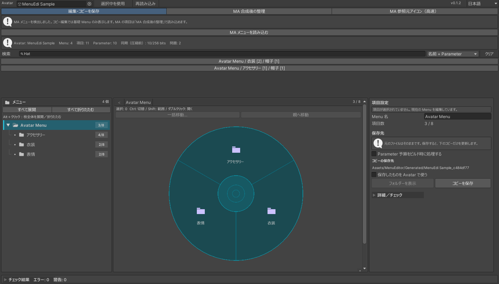
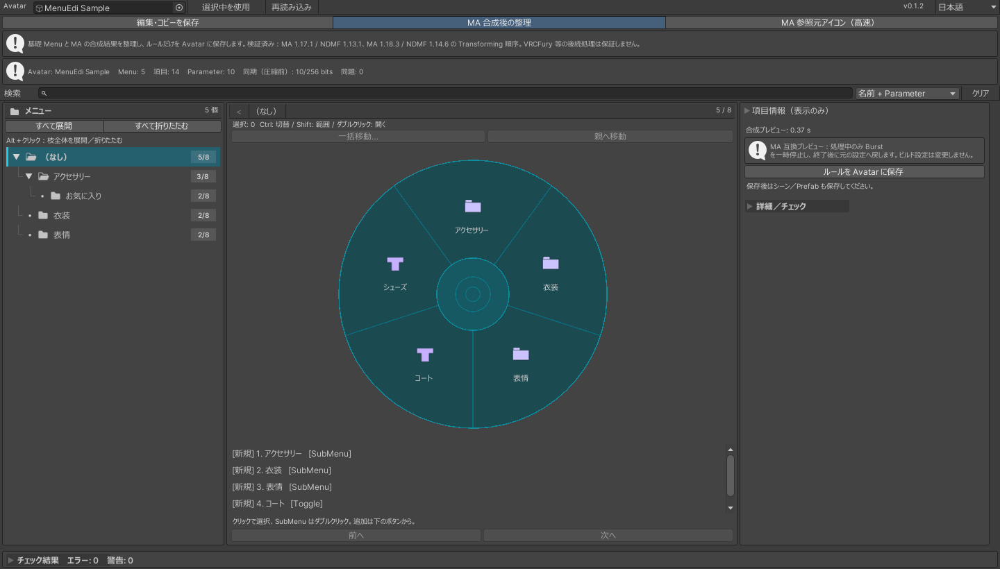
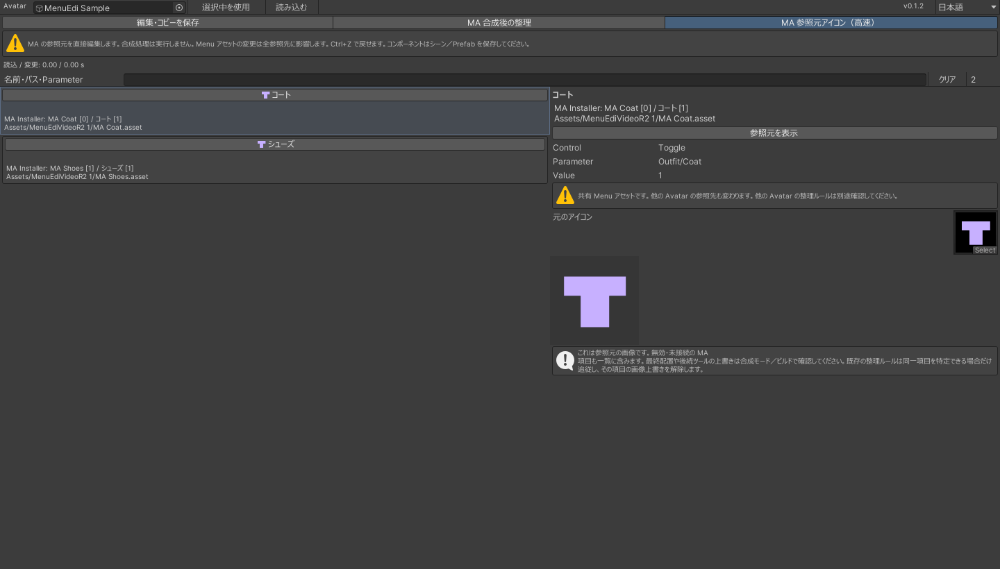

Getting started
Menu Edi is a Unity editor tool for VRChat Expression Menus and Parameters. Load your avatar, then choose the mode that fits your task.
Import the package
Extract the ZIP from BOOTH and import the unitypackage. Keep a scene or project backup before editing.
Open Menu Edi
Open “黒猫Dev → メニューエディ” in Unity. Assign the avatar root, or select it in the Hierarchy and use the current-selection button.
Load and choose a mode
Load the data. An enabled MA Menu Installer or existing organization rules may select merged mode automatically. You can switch using the three tabs at the top.
Choose a mode
Choose based on what you want to read and where you want to save. Copy editing, build rules, and direct source edits have different effects.
| Mode | Use it for | Where changes go |
|---|---|---|
| Edit and Save Copy | Edit the base Menu and Parameters; search, select, reorder, move and group items. | Preserves source Save a dedicated copy. Original Menu and Parameters stay unchanged. MA additions are not included. |
| Organize MA Merged Menu | Reorder, move and group the base + MA output. Set non-destructive icon rules. | Saves rules Save rules on the avatar, applied during building. Source Menus and MA settings stay unchanged. |
| MA Source Icons (Fast) | Change source icons referenced by MA Menu Installers or MA Menu Items without merging. | Changes source Directly edits source Menus or components. Shared Menu changes affect other avatars too. |
Step-by-step examples
Choose a mode and a step. The pink outlines show where to act or what to check.
Search names or parameters
Choose names + parameters and enter Hat. Full paths distinguish the two identically named hats. Click a result to expand its hierarchy and select it.
① Search field · ② Full result paths

- Search names or parameters
Choose names + parameters and enter Hat. Full paths distinguish the two identically named hats. Click a result to expand its hierarchy and select it. Open full-size image ↗
- Select multiple items
Click to select one item, Ctrl-click to toggle selection, or Shift-click for a range. Here, Hat and Ribbon are selected. Search results provide navigation, not multi-selection. Open full-size image ↗
- Group into a new submenu
Open Batch Move, choose a destination and insertion position, and enter a group name. Use the new-submenu button. Existing submenus and the parent menu are also valid destinations. Open full-size image ↗
- Check the result
Both items are inside Favorites, preserving their relative order, parameters, values, images and control settings. Selection stays with them. Undo and redo apply to the whole operation. Open full-size image ↗
- Save and use the copy
Check the output location and save the copy. Enable Assign Copy to Avatar to use it on this avatar. Subsequent saves update that avatar’s existing generated output. Open full-size image ↗


Load the merged menu
Switch to Organize MA Merged Menu and load it. Here, MA adds Coat and Shoes to the base menu.
① Merged mode · ② Combined items

- Load the merged menu
Switch to Organize MA Merged Menu and load it. Here, MA adds Coat and Shoes to the base menu. Open full-size image ↗
- Group the added clothes
Select Coat and Shoes in the same menu. Open Batch Move, name the new group, and move them into a new submenu. Open full-size image ↗
- Review the sources and result
The right panel shows each item’s origin. New items stay in their generated location until you move them. These two items moved because of the explicit grouping action. Open full-size image ↗
- Save the rules on the avatar
Save Rules on Avatar, then save the scene or prefab. The temporary generated Menu is not saved as a source asset. Open full-size image ↗
- Read the final NDMF result
Assigned Image is the configured asset; Final NDMF Preview and the wheel show the pipeline’s final output. For a non-destructive icon change, assign the image in this mode and save the rules. Open full-size image ↗


Open source-icon mode
MA Source Icons (Fast) skips NDMF. It reads Menu assets referenced by MA Menu Installers and MA Menu Items. Search by name, path or parameter.
① Source mode · ② Search

- Open source-icon mode
MA Source Icons (Fast) skips NDMF. It reads Menu assets referenced by MA Menu Installers and MA Menu Items. Search by name, path or parameter. Open full-size image ↗
- Confirm the source
Select Coat under MA Coat and confirm its path and parameter. A shared Menu may be used by other avatars; changing it affects every reference. Open full-size image ↗
- Change the source icon
Assign a saved Project Texture2D to Source Icon. None clears the custom icon. The image file itself, Parameters and Animator are not changed. Open full-size image ↗
- Reload and check merged output
Menu asset edits are saved immediately. Save the scene or prefab for MA Menu Item changes. Return to merged mode to inspect the result; the source list can include inactive or unconnected items. Open full-size image ↗


Screenshots use the v0.1.2 Japanese UI and sample data. Your avatar’s names, icons and hierarchy will differ. The wheel does not simulate in-game control behavior.
Video guide
A 2-minute 25-second walkthrough of searching, saving, MA grouping and icon changes. The video annotations are in Japanese.
This silent guide uses real sample editor states with explanatory overlays and paced holds. It is not a real-time performance recording or VRChat gameplay footage. Open the video ↗
Save & undo
Saving differs by mode. Editing the working data does not mean every result has been saved.
Copy editing
Save Copy writes to Assets/MenuEditor/Generated. If you assign it to the avatar, also save the scene or prefab to retain the changed references. Failed saves retain working edits and report the reason.
MA organization
Save Rules on Avatar, then save the scene or prefab. Removing Menu Organization stops rule application and restores the original generation behavior. The settings component is stripped from the built avatar. Removing it does not undo direct source-icon edits.
Source icons
Menu assets update and save directly. Component changes need a scene or prefab save. This avatar’s rules follow only an unambiguous match; check rules on other avatars that share the source separately.
Undo / redo
A batch operation is one undo/redo step. Focus Menu Edi and use Unity Undo/Redo. Undoing unsaved copy-mode data does not require writing to the source assets.
Before you move items
- Moves that exceed eight items or place a submenu inside itself or a descendant are rejected. The entire operation is cancelled, not partially applied.
- Shared submenus remain shared assets. The tool does not silently clone them into independent menus.
- Reloading or changing avatars clears stale selections. Confirm the current target before saving.
Questions & fixes
Start by checking the active mode and the first relevant Console message.
My MA items are missing, or a submenu looks empty
Copy editing only loads the base Menu. Switch to merged mode and reload. If a dependency or version notice appears, check the supported combinations below. The source-icon list is not the final merged layout.
The icon or toggle looks different in-game
With no custom icon, VRChat uses its own default artwork. Menu Edi labels the control type; it does not simulate toggle state or live puppet values. Merged mode reads the completed NDMF result, excluding later VRCFury, SDK or VRChat processing outside NDMF.
Assigned Image differs from Final NDMF Preview
Assigned Image is the rule’s source asset. Final Preview is the output after all NDMF processing, which may alter the image or its size/compression. If a later structural change prevents a reliable match, the tool stops with a reason.
My rules became invalid after a source change
Deleted, renamed or ambiguous sources are not guessed onto another item. Reload, clear invalid rules and recreate them. To stop organizing, remove Menu Organization from the avatar root and save the scene or prefab.
I exceed 256 bits but plan to compress with VRCFury
The budget shown is before compression. Explicitly enable Defer Parameter Budget to Build in copy mode to save with only the over-budget error downgraded to a warning. It does not perform compression or bypass other errors. Avatar changes and reloads reset it. Check the final budget in a real build.
Expression Parameters and Animator types differ
Compare the named parameter in Expression Parameters and the FX Animator. Some setups generate or convert data during building, so the tool does not automatically convert or delete parameters based on a warning. Confirm the intended boolean or numeric behavior, then verify the final build.
A move is rejected, or the destination exceeds eight items
Check destination capacity and cyclic references. The tool does not delete items or silently create pages. Choose another submenu or make room, then try again.
Can I use it without MA or NDMF?
Yes. With the VRChat SDK installed, copy mode remains usable. MA modes show their dependency requirements. If an avatar still has organization rules after removing MA/NDMF, restore a supported pair or remove the organization component.
Can an operation take longer than five seconds?
The tested fixtures use a five-second-per-operation gate, not a guarantee for every avatar or PC. Full merging also runs other NDMF processing. Check the reported time; for an icon-only edit, source mode is an alternative.
Does it fix MA Burst or Inspector errors?
Merged preview temporarily pauses Burst and restores its previous setting when finished. This does not repair unrelated errors in MA’s Inspector, Play Mode or SDK builds. Check the first relevant Console error.
No matching questions. Try a shorter search.
If the problem remains, contact the shop through BOOTH with your Unity, SDK, MA and NDMF versions, active mode and first relevant Console message. BOOTH ↗
Compatibility
Windows / Unity 2022.3.22f1. The following summarizes the existing v0.1.2 validation records.
| MA / NDMF | VRChat SDK | Validation scope |
|---|---|---|
| 1.18.7 / 1.14.8 | 3.10.5 | 119/119 Unity EditMode tests; fixture-avatar NDMF processing |
| 1.18.3 / 1.14.6 | 3.9.0 | 119/119 Unity EditMode tests; fixture-avatar NDMF processing |
| No MA / NDMF | 3.10.5 | Copy-mode compilation and 77/77 tests |
MA 1.17.1 / NDMF 1.13.1 / SDK 3.9.0 was validated previously and remains on the supported-pair list, but was not retested for this revision. Other unverified combinations are not covered.
Explicitly using the existing simple GameObject visibility feature generates toggle animations and an FX copy. Two/Four Axis Puppet details are read-only but preserved when moving or saving. The tool does not automatically delete parameters or organize every third-party tool’s output.